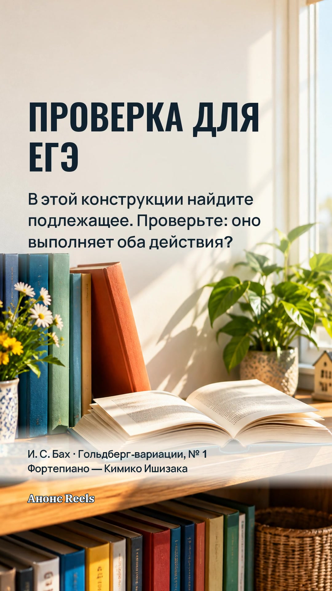

Подпись к публикации
«Прочитав рассказ, книга вернулась на полку» — грамматическая ошибка. Читал человек, а подлежащим оказалась книга. В варианте «Прочитав рассказ, я вернул книгу на полку» оба действия относятся к одному лицу. Такой разбор полезен для проверки синтаксических норм и собственной письменной речи. #егэрусский #подготовкакегэ
Stories · 1 кадр-анонс

Анонс сохраняет полный финальный кадр ролика. Нажмите на изображение, чтобы открыть крупнее.
Истории дня: вопрос и разбор
Черновик · день выпуска не назначенДва самостоятельных видео с музыкой. Сначала вопрос, затем полный разбор. Запуск со звуком — по нажатию ▶.